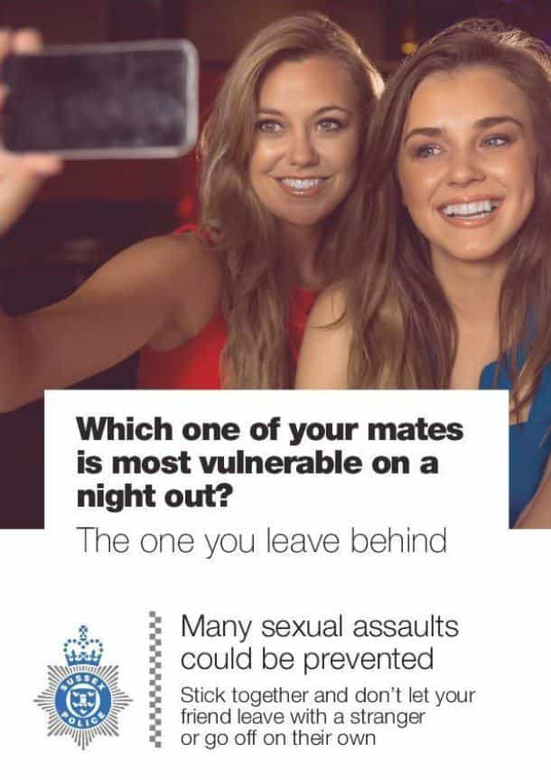
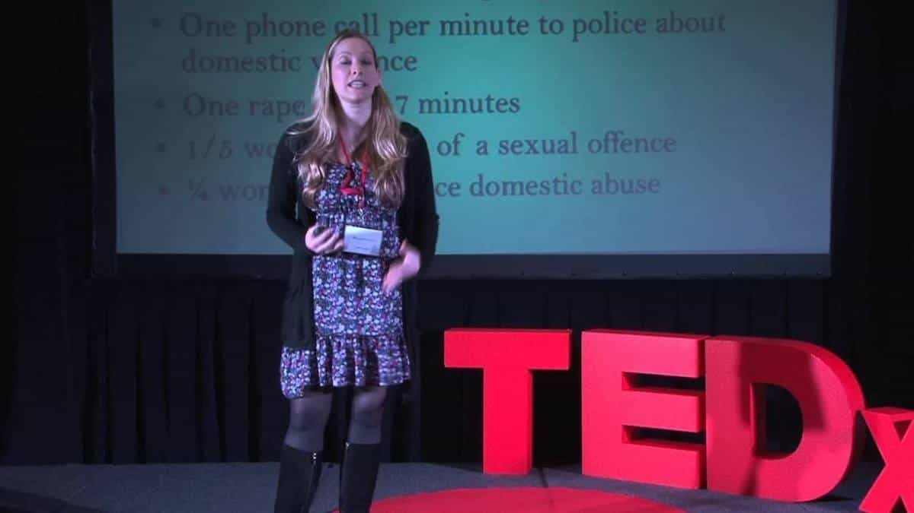

< < < Back
UK Feminists Shut Down Sussex Police Efforts To Prevent Rape – Return Of Kings
Feminists and their fellow-travellers in the British media have successfully shut down an initiative by Sussex Police to prevent rape. The poster campaign, intended to educate women about the risk of sexual assault on nights out, was initially defended by police in Sussex, a region of south-east England, but senior officers have since withdrawn the posters and issued a grovelling apology after pressure from a minority of Feminist complainers made known their opposition to the poster campaign, which they slated as “victim-blaming”.
This development signals a worrying new trend, namely that public officials in Britain now kowtow before media commentators with extreme ideological agendas, putting second the interests of taxpayers and members of the general public. The poster, below, was intended for publication in pub and club toilets in Brighton, which has a large student population:

Attack of the Shrikes
It’s sensible advice to any right-thinking individual. However, the usual array of fundamentalists took great issue with it. Premier-league cretin of British feminism Laura Bates told The Independent:
This kind of messaging (while it can be well-meaning) plays into hugely problematic victim-blaming within our society, which can make victims of sexual offences feel unable to come forward for fear they will be blamed for what happened.
Missing the point entirely that the campain was aimed at the friends of potential vicims, she continued:
Focusing on victim behaviour prevents us from placing the blame where it belongs- with the perpetrator alone.
Publishing a poster aimed at a victim’s friends also does not constitute “focusing on victim behaviour”. It is one facet of police policy. Other departments will be tasked with dealing with interrogating perps, gathering evidence and looking after real victims. Bates, a feminist hack with an English Literature degree, is lecturing cops about criminal justice policy.
A parasite in its natural habitat.
Another nutter, Glosswitch, who has previously written in the New Statesman rag on “Why farting is a feminist issue,” complained:
Almost 38 years after the first UK Reclaim the Night march made the glaringly obvious point that the threat of male violence must not limit women’s freedom of movement, it’s still being suggested that women are the ones who should be on their guard
It’s being suggested that women are the ones who should be on their guard! Who are these law enforcement professionals to suggest that women getting blind drunk on all sorts of booze might want to have a strategy in place to avoid the predations of men who frequent places full of inebriated women with nefarious purposes in mind? The patriarchal cis-het shitlords!
Glosswitch quotes another feminist hack, Soraya Chemaly, who says “teaching girls to constantly modify their behaviour in order to avoid stranger rape is a form of social control”.

British women’s alcohol consumption is a public health issue.
The disingenuousness is palpable. Sussex Police are dealing with the issue of women putting themselves in vulnerable situations. They are not teaching women to modify innate behaviours. They are trying to persuade women to take steps to counteract a risky adopted behaviour (consuming industrial quantities of alcohol).
Feminists expect that women should be able to engage in this behaviour without restraint, as if the world was their own private bouncy castle in the form of a pub. Try as a cop to mitigate the risks of rape happening in such situations and you engage engaging in “social control!”
Just turn for comparison to the debate raging in the UK as to whether drunkards turn up to hospital A&E should be levied with a fine. No shouts of “victim-blaming” there, of course. Women are a category of victims with special dispensation to drink like sailors and ride the cock carousel into oblivion with no personal accountability when the inevitable tears and trauma arise.
Cops giving worldly advice based on endless weekends spent cleaning up blood, shit, piss, and vomit in custody suites are, according to Glosswitch, fettering women’s freedom.
Common sense ain’t so common
David Davies, a former cop who is running for re-election as an MP in Monmouth in Sussex, thought the message of the posters was sound advice.
I don’t think it’s blaming victims … it’s like telling people to lock car doors
No one’s suggesting the attacker doesn’t bear responsibility, the police are simply trying to make sure people are aware of danger and try to avoid it. It’s blindingly obvious.
It’s disappointing that some groups don’t realise police are trying to help prevent problems
Stalwart former Tory MP Ann Widdecombe, also added her tuppence, commending Sussex Police for their work.
With all the silliness that we have come to expect, some women’s rights groups are complaining that such posters blame the victims for rape. Tosh.
She went in her trademark outspoken style:
So let me give all those feminist harridans apoplexy by saying unapologetically that young girls should stick together, know how they are going to get home, drink moderately and not dress too scantily.
Cowards in high places
Initially, Sussex Police defended the campaign. Chief Inspector Katy Woolford pointed out that the poster was based on research into how to help those in vulnerable situations:
We would be failing in our response if, as with any other crime, we did not recognise that there are victims and urge them to take steps to minimise risks and help safeguard others from becoming victims…It is vital to be aware of vulnerability so that steps can be taken to guard against it. Friends and bystanders can play a key role in this, learning to recognise where their intervention may prevent a crime taking place.
Ultimately he campaign of outrage managed to browbeat Sussex Police into withdrawing the postes, Det Supt Paul Furnell announcing that the force had decided with its “partners” to pull the campaign, supplicating further: “The posters were well-intentioned with the sole aim of preventing people becoming victims of crime.”
Sussex Police had been made to pull the plug on the campaign by “democratically elected” Police and Crime Commissioner for Sussex, Katy Bourne, a career bureaucrat, who had come demanding answers armed with a file full of cuttings of press coverage about the campaign.
Feminists, a plague on the UK state
Sarah Green, giving credence to Roosh V’s claim that “Feminism is self-esteem welfare for women lacking beauty privilege.”
The invocation of the feminist mantra of “victim-blaming” in this case is a semantic nonsense. If anything, the poster is blaming the friends of the victim for abandoning her and putting her in a vulnerable position. The problem facing British men is not feminist abuse of language, however, but rather the growing influence of feminist agitators over public institutions.
A minority of gender-political hucksters were able to marshall Twitter and the national press in order to force a police force, funded to the tune of 24% by council tax paid by local people, the rest coming from central government, to backtrack their policy, wasting precious taxpayer money in order to satisfy a feminist whim about what constitutes proper narrative.
Moreover, the opinions of societal parasites like Sarah Green and Laura Bates is being given precedence over the professional judgment of hardened police officers with decades of service on the front line. Green and Bates make a comfortable, cushy living in the tertiary sector lecturing people with real jobs on how to do them, all on the basis of theories and studies biased in favour of a violently extremist ideology (feminism).
In the process, the empirical observations and instincts of front line cops are being marginalised to please a baying mob of Twitter schmucks who, like Green and Bates, wouldn’t last four minutes on the front line of British policing. If that doesn’t make you angry, you’re not paying attention.
Read Next: The Rape Card Now Trumps The Legal System In The UK


{kind=link}
{kind=link}
{kind=link}